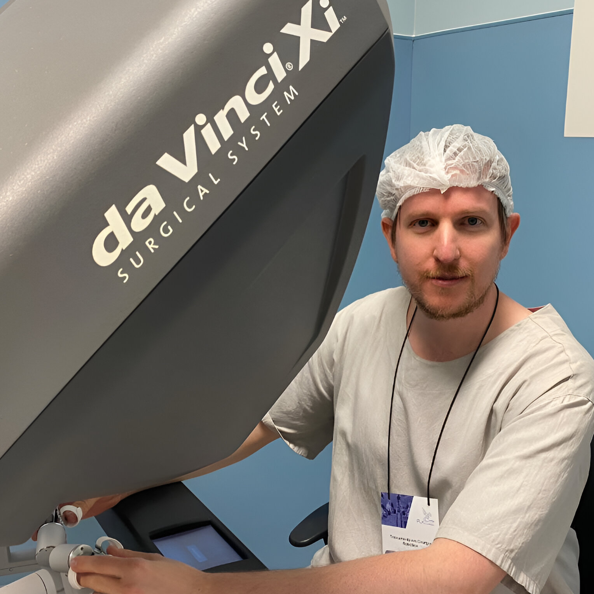

<div class="container-dr-sebastian-ansaldi">
  <div class="secondary-container">
    <div class="left-container">
      <span class="doctor-name">Dr. Sebastian Ansaldi</span>
      <span class="doctor-registration">MATRICULA Nº 20.186</span>
      <div class="separator"></div>
      <ul class="list-items">
        <li class="item">Certificación en Cirugía Robótica Plataforma Xi en Instituto Falke y Hospital Samaritano de
          Higienópolis, San Pablo,
          Brasil. Marzo a Noviembre 2023.</li>
        <li class="item">Curso de Cirugía Colorrectal y Transanal Minimamente Invasiva. Ircad Barretos, Brasil. Abril 2022.</li>
        <li class="item">Instancia Formativa en Cirugía general, oncológica, colorrectal y robótica en Adventh Health Orlando,
          EEUU. Octubre a
          Noviembre 2018.</li>
        <li class="item">Asistente a Orlando Colorectal Congress. Noviembre 2018.</li>
        <li class="item">Instancia formativa en Servicio de trasplante multiorgánico de la Fundación Favaloro, Capital Federal.
          Octubre a
          Noviembre 2014.</li>
        <li class="item">Carrera de Posgrado en Cirugía general dependiente de la Universidad Nacional de Rosario, con
          residencia en Hospital
          Provincial del Centenario. Años 2011 a 2015.</li>
        <li class="item">Médico recibido en Facultad de Ciencias Médicas de la UNR.</li>
        <li class="item">Miembro titular de la Asociación Argentina de Cirugia.</li>
        <li class="item">Miembro de la Sociedad de Cirugía de Rosario</li>
        <li class="item">Docente en Clínica quirúrgica. Facultad de Ciencias Médicas de la UNR.</li>
      </ul>
    </div>
    <div class="right-container">
      
      <button class="request-appointment-button">Solicitar Turno</button>
    </div>
  </div>
</div>